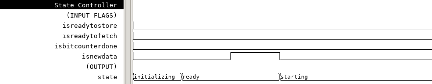
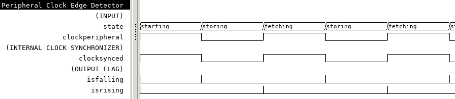
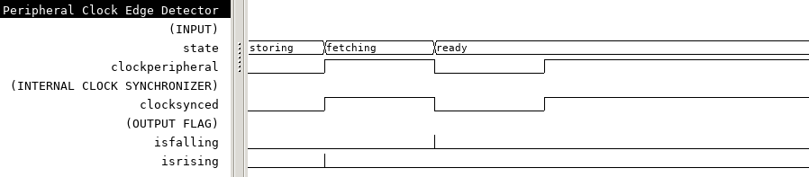
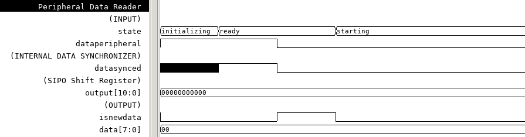
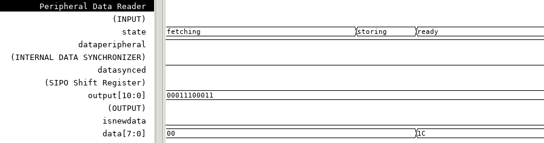
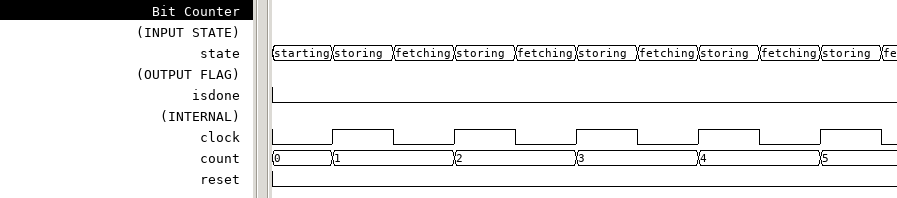
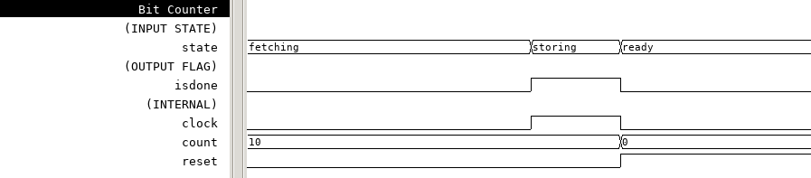

Hangman
Table of Contents
1 Specifications
You are to design an electronic system that allows a person to
play hangman using a USB keyboard and an LCD display panel
connected to Xilinx’s Zybo Z7-10 board. The board should
communicate with a remote personal computer (PC) using a USB to
UART adapter. The LCD display is connected to the Zybo board using
a single PMOD port JE. When the hardware is powered, the LCD
should have a display nothing except for a single cursor
(underline located at the left side of the LCD Screen). For the
USB-UART serial port you may use: minimum Baud rate: 9600; parity:
none; data bits: 8; stop bits: 1.
The software on the PC should have a graphical user interface
(GUI) to display the status of the game. A picture with hangman’s
noose, etc., should be shown on the GUI. The Software may be
written in C++, C# or JAVA. It should read a text file that
contains a set of 5-10 words. The word puzzles should be of
variable lengths, not exceeding 20 letters per word.
The text file is to be loaded at the beginning of the game. The
software should display the message: “New Game?” on the GUI and on
the LCD module. The player must reply in the affirmative by
pressing the “Y”-key on the USB keyboard connected to the
hardware. Pressing any other key should do nothing. Note that this
keyboard is not the one connected to the PC. The keyboard’s
hardware should be able recognize, at the minimum, the English
alphabets from A through Z. The software should then randomly pick
one of the puzzle words from the text file and display the
positions of every letter in the word with an underscore
“_”symbol. On the LCD display module the word would be left
justified.
After the puzzle is displayed, the player should be allowed to
guess a letter using the external PS/2 keyboard. A maximum of 6
guesses are allowed per puzzle. If a letter was guessed correctly,
the system should display every instance of the letter in the
word. For a wrong guess, the “picture” on the GUI should
change. On the hardware, a 7-segment display should be used to
indicate the number of guesses that remain.
If the player successfully picks every letter, the PC should
then send a congratulatory message to the LCD display saying
“Well done! You have solved N puzzles out of M”. If the player
fails, the message should be “Sorry! The correct word was
XXXXX. You have solved N puzzles out of M”. Since these
messages have more than 20 letters and spaces, it should appear
at the right edge of the LCD display and scroll across the
screen at a rate appropriate for reading of the message. The
system should then display: “New Game?” The player can always
request a new puzzle by typing “Y”, unless all of the words
from the text-file have been used up. At this point, the
player should be able to end the game by typing the letter
“N”. When the game ends, the LCD should display the final
points (“4 correct out of 10”) and after a short duration, the
message: “GAME OVER”.
2 Top-Level Design
3 PS2 Keyboard Controller
3.1 State Machine
Insert State Machine Diagram
3.2 State Controller
Complete code is in the appendix section 4.1.2.
3.2.1 Motivation for a State Controller
The State Controller encapsulates state changes. As such, the Bit Counter, Data Reader, and Clock Edge Detector react to these states, but never set them. In a similar manner, any flag that is generated by the Bit Counter, Data Reader, or Clock Edge Detected, is sent only to the State Controller. These flags act as conditions for state changes. This design ensures that each component of a state-controlled system has a matching port interface.
3.2.2 State Changes
The system starts in the Initializing state. This state exists for one clock cycle to reset flip-flops. When the State Controller is reset, the state is also set to Initializing.
if reset = '1' then state <= initializing; ...
The Ready state is loaded unconditionally after the Initializing state.
... case state is when initializing => state <= ready; ...
The State Controller will stay in the Ready state until new data is detected by the Data Reader, at which point, the Starting state is loaded. This is illustrated in figure 1.
... when ready => if flag.isNewData = '1' then state <= starting; end if; ...

Figure 1: State Controller sets state to "Starting" when the "isNewData" flag is set.
Once in the Starting state, the State Controller will cycle through the Storing and Fetching states until the Bit Counter is done counting.
... when starting => if flag.isReadyToStore = '1' then state <= storing; end if; when storing => if flag.isBitCounterDone = '1' then state <= ready; elsif flag.isReadyToFetch = '1' then state <= fetching; end if; when fetching => if flag.isReadyToStore = '1' then state <= storing; end if; end case;
Figure 2: isReadyToFetch and isReadyToStore flags are triggering state changes.
if reset = '1' then state <= initializing; else case state is when initializing => state <= ready; when ready => if flag.isNewData = '1' then state <= starting; end if; when starting => if flag.isReadyToStore = '1' then state <= storing; end if; when storing => if flag.isBitCounterDone = '1' then state <= ready; elsif flag.isReadyToFetch = '1' then state <= fetching; end if; when fetching => if flag.isReadyToStore = '1' then state <= storing; end if; end case;
Figure 3: PS2 Controller Block Diagram.
3.3 Clock Edge Detector

Figure 4: PS2 Controller Block Diagram.

Figure 5: PS2 Controller Block Diagram.
3.4 Data Reader

Figure 6: PS2 Controller Block Diagram.
Figure 7: PS2 Controller Block Diagram.

Figure 8: PS2 Controller Block Diagram.
3.5 Bit Counter
Figure 9: PS2 Controller Block Diagram.

Figure 10: PS2 Controller Block Diagram.

Figure 11: PS2 Controller Block Diagram.
4 Appendix: Code
4.1 PS2 Controller
4.1.1 Top-level
library ieee, timer_counter, flip_flop; use work.ps2_pkg; use ieee.std_logic_1164.all; entity PS2Controller is port( clock: in std_logic; reset: in std_logic; peripheral: in ps2_pkg.Peripheral; flag: buffer ps2_pkg.FlagExternal; data: out ps2_pkg.Byte); end entity; architecture structural of PS2Controller is signal state: ps2_pkg.State; signal flagInternal: ps2_pkg.FlagInternal; begin flagDelay: entity flip_flop.DFlipFlop port map( clock => clock, data => flagInternal.isBitCounterDone, output => flag.isNewData); stateController: entity work.StateController port map( clock => clock, reset => reset, flag => flagInternal, state => state); bitCounter: entity work.BitCounter port map( state => state, isDone => flagInternal.isBitCounterDone); peripheralClockEdgeDetector: entity work.PeripheralClockEdgeDetector port map( clock => clock, clockPeripheral => peripheral.clock, state => state, flag.isRising => flagInternal.isReadyToFetch, flag.isFalling => flagInternal.isReadyToStore); peripheralDataReader: entity work.PeripheralDataReader port map( clock => clock, dataPeripheral => peripheral.data, state => state, flag.isNewData => flagInternal.isNewData, data => data); end architecture;
4.1.2 State Controller
library ieee; use ieee.std_logic_1164.all, ieee.numeric_std.all; use work.ps2_pkg; use work.ps2_pkg.initializing, work.ps2_pkg.ready, work.ps2_pkg.starting, work.ps2_pkg.fetching, work.ps2_pkg.storing; entity StateController is port( clock: in std_logic; reset: in std_logic; flag: in ps2_pkg.FlagInternal; state: buffer ps2_pkg.State); end entity; architecture behavioral of StateController is begin updateState: process(clock, reset, flag) begin if rising_edge(clock) then if reset = '1' then state <= initializing; else case state is when initializing => state <= ready; when ready => if flag.isNewData = '1' then state <= starting; end if; when starting => if flag.isReadyToStore = '1' then state <= storing; end if; when storing => if flag.isBitCounterDone = '1' then state <= ready; elsif flag.isReadyToFetch = '1' then state <= fetching; end if; when fetching => if flag.isReadyToStore = '1' then state <= storing; end if; end case; end if; end if; end process; end architecture;
4.1.3 Bit Counter
library ieee, timer_counter; use ieee.std_logic_1164.all; use work.ps2_pkg; use timer_counter.timer_pkg; use work.ps2_pkg.initializing, work.ps2_pkg.ready, work.ps2_pkg.starting, work.ps2_pkg.fetching, work.ps2_pkg.storing; entity BitCounter is port( state: in ps2_pkg.State; isDone: out std_logic); end entity; architecture behavioral of BitCounter is signal timer: timer_pkg.TimerCounter; begin stateMachine: process(state, timer.isDone) begin case state is when initializing | ready => timer.reset <= '1'; timer.clock <= '0'; isDone <= '0'; when starting => timer.reset <= '0'; when storing => timer.clock <= '1'; if timer.isDone = '1' then isDone <= '1'; end if; when fetching => timer.clock <= '0'; end case; end process; timerCounterInstance: entity timer_counter.TimerCounter generic map(countMax => ps2_pkg.totalTransmitLength) port map(timer.clock, timer.reset, timer.isDone); end architecture;
4.1.4 Peripheral Clock Edge Detector
library ieee, synchronizer; use ieee.std_logic_1164.all; use work.ps2_pkg; use synchronizer.sync_pkg; use work.ps2_pkg.initializing, work.ps2_pkg.ready, work.ps2_pkg.starting, work.ps2_pkg.fetching, work.ps2_pkg.storing; entity PeripheralClockEdgeDetector is port( clock: in std_logic; clockPeripheral: in std_logic; state: in ps2_pkg.State; flag: out ps2_pkg.FlagPeripheralClock); end entity; architecture behavioral of PeripheralClockEdgeDetector is signal clockSynced: std_logic; begin stateMachine: process(state, clockSynced) begin case state is when initializing | ready => flag <= (others => '0'); when starting | fetching => flag.isFalling <= not clockSynced; flag.isRising <= '0'; when storing => flag.isRising <= clockSynced; flag.isFalling <= '0'; end case; end process; clockSynchronizer: entity synchronizer.Synchronizer port map( clock => clock, input => clockPeripheral, output => clockSynced); end architecture;
4.1.5 Peripheral Data Reader
library ieee, shift_register, synchronizer; use ieee.std_logic_1164.all; use shift_register.shift_pkg; use synchronizer.sync_pkg; use work.ps2_pkg; use work.ps2_pkg.initializing, work.ps2_pkg.ready, work.ps2_pkg.starting, work.ps2_pkg.fetching, work.ps2_pkg.storing; entity PeripheralDataReader is port( clock: in std_logic; dataPeripheral: in std_logic; state: in ps2_pkg.State; flag: out ps2_pkg.FlagPeripheralData; data: out ps2_pkg.Byte); end entity; architecture behavioral of PeripheralDataReader is constant memoryWidth: positive := ps2_pkg.totalTransmitLength; signal memory: shift_pkg.SIPOShiftRegister(output(memoryWidth-1 downto 0)); signal dataSynced: std_logic; begin stateMachine: process(state, dataSynced, memory) is begin case state is when initializing => memory.reset <= '1'; memory.clock <= '0'; data <= (others => '0'); flag.isNewData <= '0'; when ready => data <= shift_pkg.flipBitOrder(memory.output(ps2_pkg.CodeByteRange)); flag.isNewData <= not dataSynced; when starting => flag.isNewData <= '0'; memory.reset <= '0'; when storing => memory.input <= dataSynced; memory.clock <= '0'; when fetching => memory.clock <= '1'; end case; end process; dataSynchronizer: entity synchronizer.Synchronizer port map( clock => clock, input => dataPeripheral, output => dataSynced); sipoShiftRegister: entity shift_register.SIPOShiftRegister generic map(width => memoryWidth) port map( clock => memory.clock, reset => memory.reset, input => memory.input, output => memory.output); end architecture;
4.1.6 PS2 Package
library ieee; use ieee.std_logic_1164.all; use ieee.numeric_std.all; package ps2_pkg is subtype Byte is unsigned(7 downto 0); constant break: Byte := x"F0"; constant multi: Byte := x"E0"; constant startLength: positive := 1; constant stopLength: positive := 1; constant parityLength: positive := 1; constant totalTransmitLength: positive := startLength + Byte'length + parityLength + stopLength; subtype Code is unsigned(totalTransmitLength-1 downto 0); subtype CodeByteRange is natural range totalTransmitLength-1 - startLength downto totalTransmitLength-1 - Byte'length; type FlagInternal is record isNewData: std_logic; isBitCounterDone: std_logic; isReadyToFetch: std_logic; isReadyToStore: std_logic; end record; type FlagExternal is record isNewData: std_logic; end record; type FlagPeripheralClock is record isRising: std_logic; isFalling: std_logic; end record; type FlagPeripheralData is record isNewData: std_logic; end record; type Peripheral is record clock: std_logic; data: std_logic; end record; type PS2Controller is record clock: std_logic; reset: std_logic; peripheral: Peripheral; flag: FlagExternal; data: Byte; end record; type State is (initializing, starting, ready, fetching, storing); end package;
4.2 LCD Controller
4.2.1 Top-Level
library IEEE; use IEEE.std_logic_1164.all; use ieee.numeric_std.all; entity LCD_Controller is port( clk, clk_en: in std_logic; en, reset: in std_logic; RS, RW: in std_logic; data:in std_logic_vector(7 downto 0); LCD_RW, LCD_EN, LCD_RS: out std_logic; LCD_Data: out std_logic_vector(7 downto 0); busy: out std_logic ); end LCD_Controller; architecture behavioral of LCD_Controller is type state_t is (reset_s, start_s, en_s, write_s, hold_s); signal state: state_t; signal data_start: std_logic_vector(7 downto 0); begin process(clk) begin if reset='1' then state <= reset_s; busy <= '1'; LCD_RW <= '0'; LCD_EN <= '0'; LCD_RS <= '0'; LCD_Data <= (others => '0'); elsif rising_edge(clk) and clk_en='1' then case state is when reset_s => state <= start_s; busy <= '0'; LCD_RW <= RW; LCD_EN <= '0'; LCD_RS <= RS; when start_s => LCD_RW <= RW; LCD_RS <= RS; if en = '1' then state <= en_s; busy <= '1'; LCD_EN <= '1'; data_start <= data; end if; when en_s => state <= write_s; busy <= '1'; LCD_EN <= '1'; LCD_Data <= data_start; when write_s => state <= hold_s; busy <= '1'; LCD_EN <= '0'; LCD_Data <= data_start; when hold_s => state <= start_s; busy <= '0'; LCD_EN <= '0'; LCD_RW <= RW; LCD_RS <= RS; end case; end if; end process; end behavioral;
4.2.2 User-Logic
library IEEE; use IEEE.STD_LOGIC_1164.ALL; package LCD_Screen is -- 32 ascii values (8bit) on LCD screen. type screen is array(31 downto 0) of std_logic_vector(7 downto 0); end LCD_Screen; library IEEE; use IEEE.STD_LOGIC_1164.ALL; use IEEE.NUMERIC_STD.ALL; use work.LCD_Screen.all; entity LCD_Userlogic is generic (freq_in: integer := 50000000); -- The input clk frequency. port( clk, en, reset: in std_logic; iData: in screen; LCD_RW,LCD_en,LCD_RS : out std_logic; LCD_data : out std_logic_vector(7 downto 0) ); end LCD_Userlogic; architecture behavioral of LCD_Userlogic is component LCD_Controller is port( clk, clk_en: in std_logic; en, reset: in std_logic; RS, RW: in std_logic; data:in std_logic_vector(7 downto 0); LCD_RW, LCD_EN, LCD_RS: out std_logic; LCD_Data: out std_logic_vector(7 downto 0); busy: out std_logic ); end component; -- Produce a clk_enable signal at the specified output_frequency. component clk_enabler is GENERIC ( CONSTANT in_freq : integer := 150000000; -- 150 MHz CONSTANT out_freq : integer := 1 -- 1.0 Hz ); port( clk: in std_logic; clk_en: out std_logic ); end component; -- Produce a reset signal for MAX_COUNT cyles when system initializes. component ResetDelay is generic (MAX_COUNT: integer := 20); port ( signal clk: in std_logic; signal reset: out std_logic := '1' ); end component; type state_t is (powerOn_s, initCmd_s, write_s, wait_s); signal state: state_t := powerOn_s; signal lcd_cntl_clk_en, lcd_cntl_en, lcd_cntl_busy: std_logic; signal powerOn_hold, initCmd_hold: std_logic; -- Hold the powerOn and initCmd states. signal data: std_logic_vector (8 downto 0); -- RS and 8bit ascii char. signal dataSel: integer range 0 to 39 := 0; -- Select the data to send to the LCD controller. begin -- Hold for 15ms after power on. hold_PowerOn: ResetDelay generic map(MAX_COUNT => freq_in/66 - 1) -- 66Hz ~> 15ms port map(clk=>clk, reset=>powerOn_hold); -- Hold for 19.5ms (15ms + 4.5ms) after power on. hold_initCmd: ResetDelay generic map(MAX_COUNT => freq_in/50 - 1) -- 50Hz ~> 19.5ms port map(clk=>clk, reset=>initCmd_hold); lcd_cntl_clk_enabler: clk_enabler generic map (in_freq=>freq_in, out_freq=>5000) -- Must wait 100us between ops, 5kHz -> 200us port map(clk=>clk, clk_en=>lcd_cntl_clk_en); lcd: LCD_Controller port map( clk=>clk, clk_en=>lcd_cntl_clk_en, en=>lcd_cntl_en, reset=>'0', RS=>data(8), RW=>'0', data=>data(7 downto 0), LCD_RW=>LCD_RW, LCD_EN=>LCD_EN, LCD_RS=>LCD_RS, LCD_Data=>LCD_Data, busy=>lcd_cntl_busy ); process(clk) begin if powerOn_hold = '1' then state <= powerOn_s; lcd_cntl_en <= '0'; dataSel <= 0; elsif rising_edge(clk) then case (state) is -- Wait for Module to initialize. when powerOn_s => lcd_cntl_en <= '0'; dataSel <= 0; if powerOn_hold = '0' then state <= initCmd_s; -- Pulse one write of the first data. dataSel <= 0; lcd_cntl_en <= '1'; end if; -- Send/Hold first command when initCmd_s => if initCmd_hold = '0' then state <= write_s; end if; -- Only perform one data write. if lcd_cntl_busy = '1' then lcd_cntl_en <= '0'; end if; -- Write current data. when write_s => lcd_cntl_en <= '1'; -- The current write operation started. if lcd_cntl_busy = '1' then state <= wait_s; -- Run initialization sequence. if reset='1' then dataSel <= 0; -- reset to first screen value. elsif dataSel=39 then dataSel <= 6; -- Move to next data. else dataSel <= dataSel + 1; end if; end if; when wait_s => lcd_cntl_en <= '1'; -- The current write operation finished. if lcd_cntl_busy = '0' then state <= write_s; end if; end case; end if; end process; process(dataSel) begin case dataSel is when 0 => data <= '0' & X"30"; -- Function Set (interface=8bit, N=2 lines, F=8/5 dot font) when 1 => data <= '0' & X"30"; -- Function Set (interface=8bit, N=2 lines, F=8/5 dot font) when 2 => data <= '0' & X"38"; -- Function Set (interface=8bit, N=2 lines, F=8/5 dot font) when 3 => data <= '0' & X"0C"; -- Display Control (Display on, cursor and blinking off) when 4 => data <= '0' & X"01"; -- Clear Display when 5 => data <= '0' & X"07"; -- Entry Mode Set (Cursor move fwd and shift enable) when 6 => data <= '0' & X"02"; -- reset cursor to HOME. when 7 => data <= '1' & iData(0); -- User data 0. when 8 => data <= '1' & iData(1); -- User data 1. when 9 => data <= '1' & iData(2); -- User data 2. when 10 => data <= '1' & iData(3); -- User data 3. when 11 => data <= '1' & iData(4); -- User data 4. when 12 => data <= '1' & iData(5); -- User data 5. when 13 => data <= '1' & iData(6); -- User data 6. when 14 => data <= '1' & iData(7); -- User data 7. when 15 => data <= '1' & iData(8); -- User data 8. when 16 => data <= '1' & iData(9); -- User data 9. when 17 => data <= '1' & iData(10); -- User data 10. when 18 => data <= '1' & iData(11); -- User data 11. when 19 => data <= '1' & iData(12); -- User data 12. when 20 => data <= '1' & iData(13); -- User data 13. when 21 => data <= '1' & iData(14); -- User data 14. when 22 => data <= '1' & iData(15); -- User data 15. when 23 => data <= '0' & X"C0"; when 24 => data <= '1' & iData(16); -- User data 16. when 25 => data <= '1' & iData(17); -- User data 17. when 26 => data <= '1' & iData(18); -- User data 18. when 27 => data <= '1' & iData(19); -- User data 19. when 28 => data <= '1' & iData(20); -- User data 20. when 29 => data <= '1' & iData(21); -- User data 21. when 30 => data <= '1' & iData(22); -- User data 22. when 31 => data <= '1' & iData(23); -- User data 23. when 32 => data <= '1' & iData(24); -- User data 24. when 33 => data <= '1' & iData(25); -- User data 25. when 34 => data <= '1' & iData(26); -- User data 26. when 35 => data <= '1' & iData(27); -- User data 27. when 36 => data <= '1' & iData(28); -- User data 28. when 37 => data <= '1' & iData(29); -- User data 29. when 38 => data <= '1' & iData(30); -- User data 30. when 39 => data <= '1' & iData(31); -- User data 31. when others=> data <= '0' & X"30"; end case; end process; end behavioral;
4.3 Hangman Software
import java.io.BufferedReader; import java.io.FileReader; import java.io.IOException; import java.awt.*; import java.awt.event.*; import java.awt.Graphics; import java.awt.Graphics2D; import java.awt.geom.Line2D; import javax.swing.*; import java.awt.Graphics; import java.util.Arrays; import java.lang.Object; import java.awt.geom.*; import java.awt.geom.Ellipse2D; import com.fazecast.jSerialComm.*; import java.awt.Robot; public class HangMan1 extends JFrame{ static char keyboardinput; static boolean gameover = true; static int correctpuzzles = 0; static int incorrectpuzzles = 0; static String[] wordarray = new String[9]; static char[] guessedvalues = new char[30]; static char[] values = new char[30]; static char[] incorrectguessedvalues = new char[6]; static int j = 0; static int incorrectguesses = 0; static int currentmatrixnum = 0; static String underscores; static JLabel label; JPanel main; JFrame frame; HangMan1() { main = new JPanel(); label = new JLabel("s"); label.setText("press Y to begin HangMan"); main.add(label); getContentPane().add(main); addKeyListener(new MyKeyListener()); setSize(new Dimension(1200,600)); } public void paint(Graphics g) { super.paint(g); // fixes the immediate problem. Graphics2D g2 = (Graphics2D) g; Line2D lin = new Line2D.Float(200, 400, 300, 400); g2.draw(lin); lin = new Line2D.Float(250, 400, 250, 50); g2.draw(lin); lin = new Line2D.Float(250, 50, 350, 50); g2.draw(lin); lin = new Line2D.Float(350, 50, 350, 150); g2.draw(lin); if(incorrectguesses > 0){ Shape circle = new Ellipse2D.Float(325, 150, 50, 50); g2.draw(circle); } if(incorrectguesses > 1){ lin = new Line2D.Float(350, 200, 350, 300); g2.draw(lin); } if(incorrectguesses > 2){ lin = new Line2D.Float(350, 235, 315, 215); g2.draw(lin); } if(incorrectguesses > 3){ lin = new Line2D.Float(350, 235, 385, 215); g2.draw(lin); } if(incorrectguesses > 4){ lin = new Line2D.Float(350, 300, 315, 330); g2.draw(lin); } if(incorrectguesses > 5){ lin = new Line2D.Float(350, 300, 385, 330); g2.draw(lin); } } public static void setunderscores(String word){ underscores = ""; for(int i= 0; i< word.length(); i++){ underscores += " _ "; } label.setText(underscores); } private char[] getCharArray(char[] array) { String _array = ""; for(int i = 0; i < array.length; i++) { // check if a char already exist, if not exist then return -1 if(_array.indexOf(array[i]) == -1) _array = _array+array[i]; // add new char } return _array.toCharArray(); } class MyKeyListener extends KeyAdapter { public void keyPressed(KeyEvent evt) { boolean continue2 = true; boolean incorrect = true; boolean tracking = true; int correctguesses = 0; if(evt.getKeyChar() != incorrectguessedvalues[0] && evt.getKeyChar() != incorrectguessedvalues[1] && evt.getKeyChar() != incorrectguessedvalues[2] && evt.getKeyChar() != incorrectguessedvalues[3] && evt.getKeyChar() != incorrectguessedvalues[4] && evt.getKeyChar() != incorrectguessedvalues[5] && incorrectguesses != 6 && gameover != true) { for(int w = 0; w < 26; w++){ if(guessedvalues[w] == evt.getKeyChar()){ continue2 = false; } } if(continue2){ j++; guessedvalues[j] = evt.getKeyChar(); getCharArray(guessedvalues); underscores = ""; for(int i =0; i< wordarray[currentmatrixnum].length();i++){ for(int k =0; k < 30; k++){ if(guessedvalues[k] == wordarray[currentmatrixnum].charAt(i) && guessedvalues[k] != evt.getKeyChar()){ underscores += " " + guessedvalues[k] + " "; tracking = false; correctguesses++; }} if(evt.getKeyChar() == wordarray[currentmatrixnum].charAt(i)){ underscores += " " + evt.getKeyChar() + " "; tracking = false; incorrect = false; correctguesses++; } if(tracking){ underscores += " _ "; } tracking = true; } if(incorrect){ incorrectguessedvalues[incorrectguesses] = evt.getKeyChar(); incorrectguesses++; } label.setText(underscores); } } if(incorrectguesses == 6 && gameover == false){ underscores = "Sorry! The correct word was " + wordarray[currentmatrixnum] + ". You have solved " + correctpuzzles + " puzzles out of " + currentmatrixnum +". Press Y to start a new game"; label.setText(underscores); gameover = true; } if(correctguesses == wordarray[currentmatrixnum].length() && gameover == false){ correctpuzzles++; underscores = "Well done! You have solved " + correctpuzzles + " puzzles out of " + currentmatrixnum +". Press Y to start a new game"; gameover = true; label.setText(underscores); } ////////////reset if(evt.getKeyChar() == 'y' && gameover && currentmatrixnum+1 != wordarray.length){ j = 0; currentmatrixnum++; guessedvalues = new char[30]; incorrectguessedvalues = new char[6]; setunderscores(wordarray[currentmatrixnum]); gameover = false; incorrectguesses = 0; } if(currentmatrixnum+1 == wordarray.length && gameover && evt.getKeyChar() == 'n'){ underscores = "GAME OVER, you have solved" + correctpuzzles + " puzzles out of " + currentmatrixnum; j = 0; currentmatrixnum++; guessedvalues = new char[30]; incorrectguessedvalues = new char[6]; gameover = false; label.setText(underscores); } revalidate(); repaint(); System.out.println("Check for key characters: " + evt.getKeyChar()); } } ///////////////////////////////////////////////////////////////////////////////// public static void main(String args[]) { SwingUtilities.invokeLater(new Runnable() { public void run() { HangMan1 Hang = new HangMan1(); Hang.setVisible(true); int count = 0; BufferedReader reader; try { reader = new BufferedReader(new FileReader("hangmanwords.txt")); String line = reader.readLine(); while (line != null) { System.out.println(line); wordarray[count] = line; line = reader.readLine(); count++; } reader.close(); } catch (IOException e) { e.printStackTrace(); } }}); SerialPort comPort = SerialPort.getCommPort("./virtual-tty"); comPort.openPort(); comPort.addDataListener(new SerialPortDataListener() { @Override public int getListeningEvents() { return SerialPort.LISTENING_EVENT_DATA_AVAILABLE; } @Override public void serialEvent(SerialPortEvent event) { // if (event.getEventType() != SerialPort.LISTENING_EVENT_DATA_AVAILABLE) // return; byte[] newData = new byte[comPort.bytesAvailable()]; int numRead = comPort.readBytes(newData, newData.length); int i=newData[0]; System.out.println(Character.toChars(i)); } }); } }